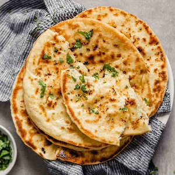

Chef John's Garlic Naan
Though restaurant naan is usually cooked in the intense heat of the tandoor oven, you can pull off this homemade version using a hot cast iron skillet. When cooked at the proper temperature, the naan will develop blistered bubbles with a lovely golden-black char. Reward yourself for a job well done by sopping it in copious amounts of curry. (Source)

Decription
You can use all-purpose flour instead of bread flour. Replace kosher salt with 1/2 teaspoon fine salt if desired. Try pairing these with my recipe for Creamy Cashew Chicken.
Ingredients
Naan
- ½ cup warm water
- 1 teaspoon white sugar
- 1 (.25 ounce) package active dry yeast
Garlic Butter
- ¼ cup butter
- 2 cloves garlic, minced
- ¼ cup plain yogurt
- 2 cups bread flour, or more as needed
- 1 teaspoon kosher salt
- ¼ cup chopped cilantro (Optional)
Steps
- Combine water, sugar, and yeast in a bowl. Let stand until yeast softens and forms a creamy foam, about 15 minutes.
- In the meantime, heat butter in a pan over medium heat until melted and sizzling. Quickly mix in garlic. Remove garlic butter from heat and set aside until ready to use.
- Add yogurt, bread flour, salt, and 1 tablespoon of the garlic butter to the yeast mixture. Stir with a wooden spoon until a shaggy dough forms. Knead by hand until dough pulls away from the sides of the bowl, adding more water or flour as needed. Turn dough out onto the counter and continue kneading into a smooth ball, 3 to 4 minutes.
- Place dough in a large bowl. Coat with a few more drizzles of garlic butter. Cover and let rise until doubled in volume, about 2 hours.
- Punch down dough and turn out onto the counter. Shape into a rough rectangle and cut into 6 pieces. Roll each piece into a ball and lightly dust with flour. Cover with plastic wrap and proof until slightly puffy, 15 to 20 minutes.
- Roll each piece into an oval about 1/8 inch thick. Sprinkle some cilantro on top and press lightly to adhere.
- Preheat a cast iron skillet until very, very hot, about 5 minutes. Cook each naan until large bubbles form, 1 to 2 minutes. Flip over, press gently, and cook until bubbles on the bottom are charred, 2 to 3 minutes more.
- Brush naan with more garlic butter before serving.
Nutrition Facts
Per Serving: 227 calories; protein 6g; carbohydrates 31.3g; fat 8.6g; cholesterol 20.9mg; sodium 384.7mg.
Return to Main Page